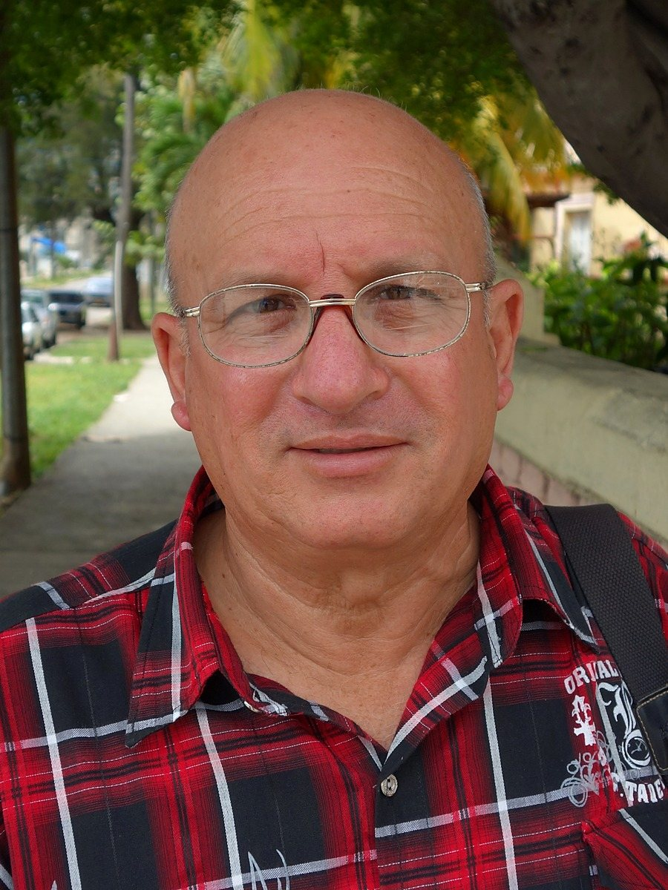

Expediente EXP-001 · Preso político

- NOMBRE:
- Félix Navarro Rodríguez
- EDAD:
- 73 años
- ORIGEN:
- Perico, Matanzas
- PRISIÓN:
- Prisión de Agüica
- CONDENA:
- 9 años (11J)
Félix Navarro Rodríguez, de 73 años, de Perico, Matanzas. Hoy sigue preso en la cárcel de Agüica.
Fue maestro y fundó el Partido por la Democracia "Pedro Luis Boitel". Esta es su tercera condena política:
- En 1992 lo metieron preso por "propaganda enemiga".
- En 2003, en la Primavera Negra, lo condenaron a 25 años como parte del Grupo de los 75. Salió en 2011 y no quiso irse al exilio.
- El 12 de julio de 2021 lo detuvieron con violencia junto a su hija Saylí, que es Dama de Blanco, cuando fueron a la estación de Perico a preguntar por los detenidos del 11J. A él le dieron 9 años por desorden público, atentado y desacato.
En enero de 2025 salió con libertad condicional en las excarcelaciones negociadas con el Vaticano, pero en abril se la revocaron alegando que había salido de su municipio sin permiso. En mayo de 2025, él y su hija rechazaron una oferta de exilio. Tiene diabetes, hipertensión y problemas del corazón. El 8 de abril de 2026 un oficial de Agüica lo arrastró esposado, lo golpeó y lo encerró en una celda de castigo.
Amnistía Internacional lo declaró preso de conciencia en 2024. El 17 de septiembre de 2026 el Parlamento Europeo aprobó una resolución que exige su libertad y la de Saylí, que también está presa y enferma de los riñones. Según ADN Cuba, padre e hija llevan 168 días sin poder verse.